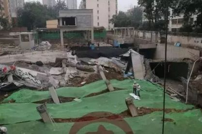
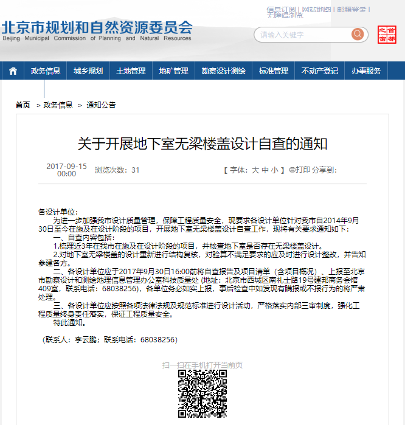
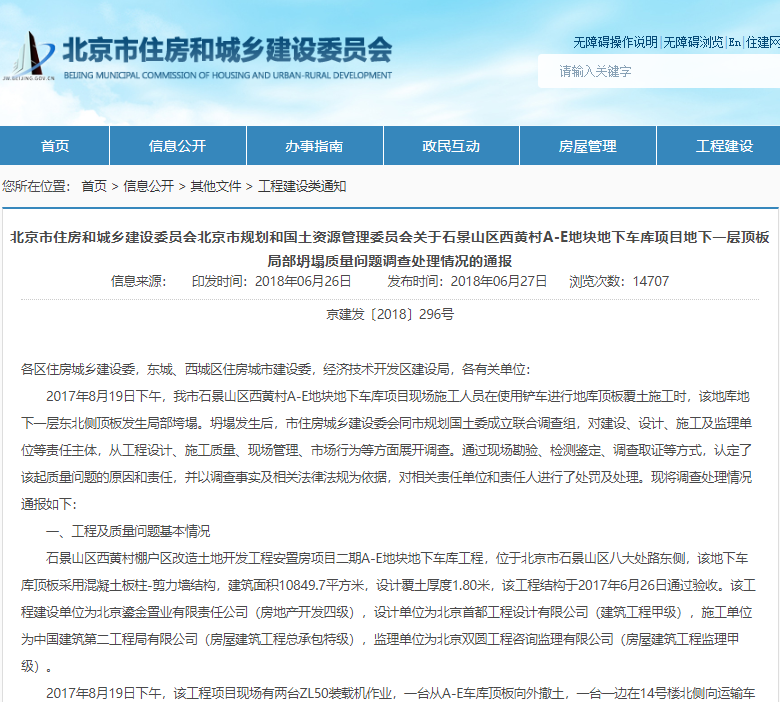

北京石景山西黄村A-E地块项目坍塌事故
2017年8月19日，北京市石景山区西黄村A-E地块地下车库项目，现场施工人员在使用铲车进行地库顶板覆土施工时，地下一层东北侧顶板发生局部垮塌。庆幸地库下方无人，仅2人受伤。

无梁楼盖自查
从现场照片可以看出，这个地库应该采用的就是无梁楼盖结构，整体发生了冲切破坏，这下可忙坏了北京市的设计院，北京市规划和国土资源管理委员会2017年9月15日下发通知，要求各设计单位针对北京市自2014年9月30日至今在施及在设计阶段的项目，开展地下室无梁楼盖设计自查工作。

2018年6月27日，北京市住房和城乡建设委员会公布事故调查报告。

事故调查处理情况:
北京市住房和城乡建设委员会北京市规划和国土资源管理委员会
关于石景山区西黄村A-E地块地下车库项目地下一层顶板局部坍塌质量问题调查处理情况的通报
京建发〔2018〕296号
各区住房城乡建设委，东城、西城区住房城市建设委，经济技术开发区建设局，各有关单位：
2017年8月19日下午，我市石景山区西黄村A-E地块地下车库项目现场施工人员在使用铲车进行地库顶板覆土施工时，该地库地下一层东北侧顶板发生局部垮塌。坍塌发生后，市住房城乡建设委会同市规划国土委成立联合调查组，对建设、设计、施工及监理单位等责任主体，从工程设计、施工质量、现场管理、市场行为等方面展开调查。通过现场勘验、检测鉴定、调查取证等方式，认定了该起质量问题的原因和责任，并以调查事实及相关法律法规为依据，对相关责任单位和责任人进行了处罚及处理。现将调查处理情况通报如下：
一、工程及质量问题基本情况
石景山区西黄村棚户区改造土地开发工程安置房项目二期A-E地块地下车库工程，位于北京市石景山区八大处路东侧，该地下车库顶板采用混凝土板柱-剪力墙结构，建筑面积10849.7平方米，设计覆土厚度1.80米，该工程结构于2017年6月26日通过验收。该工程建设单位为北京鎏金置业有限责任公司（房地产开发四级），设计单位为北京首都工程设计有限公司（建筑工程甲级），施工单位为中国建筑第二工程局有限公司（房屋建筑工程总承包特级），监理单位为北京双圆工程咨询监理有限公司（房屋建筑工程监理甲级）。
2017年8月19日下午，该工程项目现场有两台ZL50装载机作业，一台从A-E车库顶板向外撤土，一台一边在14号楼北侧向运输车上装撤出来的不合格土料，一边将14号楼北侧约3车合格土料直接推到A-E车库顶板处。下午约3:15左右，3-8/G-K轴区域地下一层顶板下沉塌陷，同区域地下二层局部塌陷。
二、原因分析
（一）直接原因
根据《国家建筑工程质量监督检验中心鉴定报告》中鉴定结论：“设计工况下地下一层顶板部分板柱节点冲切作用效应设计值大于相应位置受冲切承载力设计值，不满足《混凝土结构设计规范》（GB50010-2010）的相关要求；实际工况下地下一层顶板部分板柱节点冲切作用效应设计值大于相应位置受冲切承载力设计值，不满足《混凝土结构设计规范》（GB50010-2010）的相关要求”，该地库局部坍塌可能是由多种原因造成的，目前可确认的是地下一层顶板部分板柱节点处冲切承载力不满足设计规范要求，是该起质量问题发生的直接原因。
（二）间接原因
建设单位、设计单位、施工单位、监理单位均不同程度的存在管理漏洞，是导致该起质量问题发生的间接原因。
1.建设单位违反规定要求降低工程质量标准、疏于工程管理。
一是建设单位北京鎏金置业有限责任公司委托北京双圆工程咨询监理有限公司对独立车库进行设计优化，依据双圆监理公司“车库顶板建议采用无梁楼盖体系（设计单位原先设计的为梁板体系）和独立车库的钢筋用量进行限额设计（由150-175kg/m2减为105-115kg/m2）”的车库优化设计意见，在2015年6月29日发给首都工程设计公司的工作联系单中明确提出“如有未按时提交图纸及所提意见未回复或未修改及修改不完全等情况，我司保留对贵司的索赔权利”，设计单位迫于其压力修改设计。在此环节，建设单位存在降低建设工程质量标准的行为，违反了《建设工程质量管理条例》第十条第二款“建设单位不得明示或者暗示设计单位或者施工单位违反工程建设强制性标准，降低建设工程质量”的规定。
二是建设单位北京鎏金置业有限责任公司存在施工现场管理机构不健全，未按要求设立工程质量管理部门负责工程质量管理工作的行为，违反了《北京市建设工程质量条例》第五十九条“建设单位应当设立工程质量管理部门负责工程质量管理工作，也可聘请工程项目管理单位提供专业化质量管理服务”的规定。
三是建设单位北京鎏金置业有限责任公司存在未组织设计交底的行为，违反了《混凝土结构工程施工规范》（GB50666-2011）第3.1.3条“施工前，应由建设单位组织设计、施工、监理等单位对设计文件进行交底和会审”的规定。
四是建设单位北京鎏金置业有限责任公司存在对本项目设计单位质量管理存在漏洞，未能有效履行对工程质量的“首要责任”的行为。
2.设计单位未按照工程建设强制性标准进行设计，违规聘用设计人员。
一是设计单位北京首都工程设计有限公司存在未按照工程建设强制性标准进行设计的行为,违反了《建设工程质量管理条例》第十九条“勘察、设计单位必须按照工程建设强制性标准进行勘察、设计，并对其勘察、设计的质量负责”的规定。
二是4名设计人员同时受聘于两个设计单位，设计单位北京首都工程建筑设计有限公司存在对设计人员质量管理和责任落实不到位的行为，违反了《建设工程勘察设计管理条例》第十条、第二十条的规定。
3.施工单位备案的项目负责人到岗履职不到位、施工现场管理不到位。
一是施工单位中国建筑第二工程局有限公司备案的项目负责人杨凯明平均每个月在该项目施工现场带班生产的时间约占本月施工时间的40%，未遵守《建筑施工企业负责人及项目负责人施工现场带班暂行办法》第十一条“项目负责人每月带班生产时间不得少于本月施工时间的80%”的规定；作为注册建造师，违反了《注册建造师管理规定》第二十六条第（一）项“注册建造师不得有不履行注册建造师义务的行为”的规定。
二是施工单位中国建筑第二工程局有限公司存在A-E地下车库顶板回填土安全技术交底部分被交底人员签字非本人所签，由他人代签的行为，违反了《建设工程安全生产管理条例》第二十七条“建设工程施工前，施工单位负责项目管理的技术人员应当对有关安全施工的技术要求向施工作业班组、作业人员作出详细说明，并由双方签字确认”的规定。
4.监理单位现场监理不到位。
对施工单位项目负责人杨凯明存在未遵守《建筑施工企业负责人及项目负责人施工现场带班暂行办法》的行为，监理单位北京双圆工程咨询监理有限公司在2016年3月13日的工作联系单、2016年6月14日的监理例会、2016年7月5日的监理例会中均要求施工单位改正，落实项目经理到岗事宜，但施工单位拒不改正，对此情况监理单位北京双圆工程咨询监理有限公司未要求施工单位暂停施工，此行为违反了《北京市建设工程质量条例》第四十三条第二款“发现施工单位项目管理机构及其岗位人员不符合配备标准、施工单位项目负责人未在施工现场履行职责或者分包单位不具备相应资质的，监理单位应当要求施工单位改正；施工单位拒不改正的，可以要求暂停施工”的规定。
三、对责任单位和个人的处理决定
（一）对建设单位的处理
1.市规划国土委对建设单位北京鎏金置业有限责任公司明示或者暗示设计单位违反工程建设强制性标准，降低工程质量的行为，处以30万元罚款的行政处罚。
2.从2018年3月21日起，市住房城乡建设委限制建设单位北京鎏金置业有限责任公司3年内在本市承担新的保障房建设项目。
3.石景山区住房城乡建设委对建设单位北京鎏金置业有限责任公司存在的对设计单位管理存在漏洞，未能有效履行工程质量“首要责任”的行为，责成建设单位承担因 A-E地块地下车库坍塌造成的拆除、重建等工程费用以及因 A-E地块地下车库重建造成的安置房延期交付等产生的相关费用，不得纳入项目成本。同时，建设单位如未能按照约定的项目工期、标准等要求完成项目建设，将参照《关于印发进一步规范企业投资土地一级开发项目利润管理的通知》和《北京市石景山区人民政府关于棚户区改造和环境整治项目利润率的通知》的相关规定，给予相应处理。
4.石景山区住房城乡建设委对建设单位北京鎏金置业有限责任公司存在的施工现场管理机构不健全，未按要求设立工程质量管理部门和未组织设计交底的行为，进行了约谈告诫，要求其进一步提升质量责任意识，认真落实建设单位法定责任，设立工程质量管理部门，严格按照规范要求落实设计交底工作，强化建设工程各阶段质量管理，督促工程参建单位和人员落实质量责任。
（二）对设计单位的处理
1.市规划国土委对设计单位北京首都工程设计有限公司存在未按照工程建设强制性标准进行设计的行为,处以30万元罚款和停业整顿六个月的行政处罚，限制3年内在本市承担保障房建设项目设计任务。
2.市规划国土委对设计单位北京首都工程设计有限公司存在的违规聘用人员的行为，没收方案设计人竟昕违法所得0.9万元,并对其处以1.8万元罚款的行政处罚；没收建筑设计人冯玉春违法所得0.7万元，并对其处以1.4万元罚款的行政处罚；没收建筑设计人付凤红违法所得0.8万元，并对其处以1.6万元罚款的行政处罚;没收结构设计人金勇芳违法所得0.8万元，并对其处以1.6万元罚款的行政处罚。同时，市规划国土委对该公司的公司法定代表人及该项目的结构专业负责人李迎旭和该项目的项目负责人汪成分别处以3万元罚款和二年以内不得担任项目负责人的行政处罚。
（三）对施工单位的处理
1.石景山区住房城乡建设委对施工单位中国建筑第二工程局有限公司备案的项目负责人杨凯明不到岗履行职责的行为，给予警告，并处以1万元罚款的行政处罚。同时，在本市企业资质和人员资格动态监管系统中，给予记1分的处理。
2.石景山区住房城乡建设委对施工单位中国建筑第二工程局有限公司存在的 A-E地下车库顶板回填土安全技术交底部分被交底人员签字非本人所签，存在他人代签的行为，责令其 5天内完成整改，在本市企业资质和人员资格动态监管系统中，给予项目负责人杨凯明记1分，项目专职安全员马彬记1分的处理。
3.石景山区住房城乡建设委对施工单位中国建筑第二工程局有限公司在本次坍塌质量问题中存在的违法违规行为进行通报，加大对其实施项目的监督执法力度。
（四）对监理单位的处理
1.石景山区住房城乡建设委对监理单位北京双圆工程咨询监理有限公司发现施工单位拒不改正项目负责人未在施工现场履行职责，未要求暂停施工的行为，处以3万元罚款的行政处罚。同时，对项目总监理工程师王琳处单位罚款数额5%，即0.15万元罚款的行政处罚。
2.石景山区住房城乡建设委对监理单位北京双圆工程咨询监理有限公司在本次坍塌质量问题中存在的违法违规行为进行通报，要求工程监理企业吸取教训，认真开展自查自纠工作，严格按照法律法规、强制性标准和监理合同等，认真履行监理职责，切实保障工程质量安全。
四、下一步工作要求
此次质量问题，暴露出当前还存在工程参建单位主体责任落实不到位、施工现场管理薄弱、人员质量意识淡薄等问题。各单位要深刻吸取教训，严格落实主体责任，强化工程质量监管，坚决杜绝类似质量问题的再次发生，切实提高全市工程质量管理水平。
一是工程各建设、设计、施工、监理单位要深刻吸取教训，从严从实抓好整改及现场恢复施工工作，持续加强对施工现场项目安置房住宅楼的安全监测，确保建筑物安全稳定。建设单位北京鎏金置业有限责任公司要切实履行对工程质量的“首要责任”，进一步提升质量责任意识，设立工程质量管理部门，定期组织工程参建各方对施工现场安全情况进行自查，及时排除各类安全隐患，督促建设工程有关单位和人员落实质量责任。设计单位北京首都工程设计有限公司要严格落实设计责任，加强设计人员管理。施工单位中国建筑第二工程局有限公司要切实加强施工现场和人员管理，坚决杜绝相关人员不在场在岗履职等现象的发生。监理单位北京双圆工程咨询监理有限公司要严格履行现场监理职责，加强对施工过程的监理，对发现建设单位、施工单位存在的违法违规行为，要及时督促整改，并报告相关建设行政主管部门。
二是全市各建设、设计、施工和监理单位等要举一反三，引以为戒，结合通报中列举的相关问题，进行全面自查自纠，严格规范企业经营管理活动，建立、健全并认真落实质量管理责任制度，切实消除工程质量安全隐患。
三是市、区住房城乡建设主管部门要加大工程质量安全监督执法力度，督促各责任主体切实落实质量责任，坚决整治各类工程建设质量安全隐患, 严厉打击质量安全违法违规行为。
特此通报。
北京市住房和城乡建设委员会 北京市规划和国土资源管理委会
相关主题：
原文编辑: EHS资讯
原文链接: https://ehsinfo.cn/2019/08/12/北京石景山西黄村A-E地块项目坍塌事故.html
版权声明: 转载请注明出处(必须保留作者署名及链接)